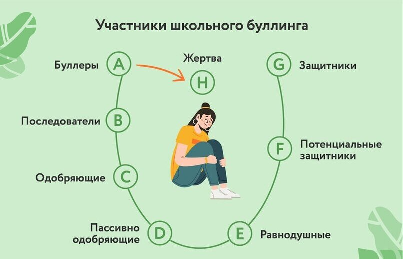
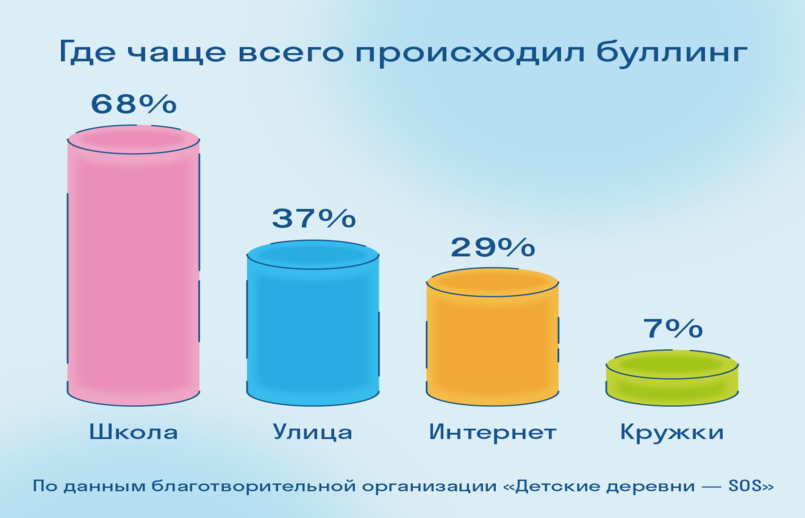
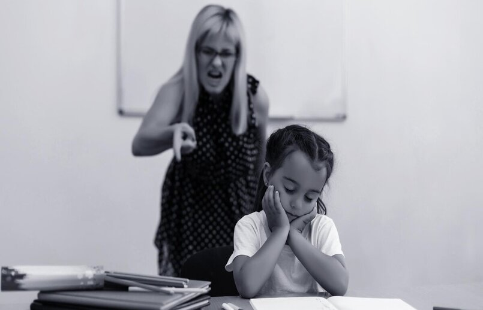

Содержание:
- Что такое буллинг
- Кто может стать жертвой
- Почему возникает буллинг
- Схема развития
- Последствия
- Выявление и признаки
- Буллинг со стороны родителей
- Буллинг со стороны учителей/руководителей
- Как реагировать ребёнку
- Как действовать родителям
- Вывод
Что такое буллинг?
Буллинг может выглядеть самым разным образом, но в нём всегда есть три действующих лица:
- Агрессор — тот, кто инициирует насилие или подключается к нему.
- Жертва — тот, на кого направлено насилие.
- Наблюдатели — те, кто не участвует в травле, но и не останавливает её.
Цель агрессоров — не один раз обидеть жертву, а изводить её системно, поэтому они выбирают непрямые формы агрессии, чаще всего — психологическое унижение, например:
- Словесные оскорбления;
- Используют изоляцию и бойкот (никто не хочет сидеть рядом с жертвой, общаться с ней);
- Отбирают или портят вещи жертвы;
- Заставляют совершать неприятные для жертвы действия;
- Толкают жертву, кидают в неё предметы.
Кто может стать жертвой?
И жертвой, и инициатором может стать любой ребенок.
Жертвы школьной травли, как правило, чувствительны, тревожны, склонны к слезам,
слабы физически, у них низкая самооценка, мало друзей, и они предпочитают проводить время со взрослыми.
Чаще всего предметом буллинга является физический недостаток,
необычная внешность и так далее. В группу риска попадают дети с
трудностями в обучении, неумением заводить друзей, расстройствами аутистического
спектра, больные диабетом, с нарушениями веса и другими заболеваниями. Как правило,
социальный статус здесь не имеет значения.
Преследователи — это подростки с жаждой самоутверждения, власти.
Они хорошо распознают чужие эмоции и успешно манипулируют другими людьми.
Такое поведение связано с духовно-нравственным развитием личности ребенка,
которое формируется, прежде всего, в семье. Модель поведения и способы коммуницирования
формируют именно родители. Когда же ребенок подрастает, он осознанно подходит к выбору
модели поведения. Очень часто агрессор на самом деле очень не уверен в себе,
и его поведение является лишь механизмом защиты внутренней слабости и низкой самооценки.
Почему возникает буллинг?
Здесь важно разделять понятия повода и причины для буллинга. Первый — лишь крючок, за который цепляется человек, который уже внутренне заинтересован в травле другого. Такими поводами могут быть любые детали.
Главное — они должны выделять жертву на фоне всех остальных в коллективе:
- Цвет кожи;
- Акцент и другие особенности речи;
- Национальность;
- Семейный достаток;
- Вкус в одежде;
- Черты лица;
- Рост и телосложение;
- Заболевания;
- Сексуальная ориентация;
- Увлечения;
- Оценки в школе.
Это только малая часть поводов, но на самом деле они не важны. Они — всего лишь отговорка для отвода глаз. Другое дело — настоящие причины, почему буллеры становятся буллерами.
Схема развития:
Буллинг в школе разделяет его участников на три группы. Первая страдает от насилия, вторая – разжигает ненависть к жертве, самоутверждается, развлекается. К группе «страдающих» относятся не только жертвы, но и свидетели (третья группа). Они переживают вторичные эффекты насилия, живут с напряжением, опасением того, что травля будет обращена на них. Таким образом, группа состоит из трех ролей: преследователи, свидетели, жертвы.
За травлей всегда стоит физическое неравенство и/или особое положение в референтной группе. Инициаторами агрессии становятся ученики, занимающие крайнее статусное положение: самые популярные либо отверженные. Последние могут собрать вокруг себя «поддержку» из таких же изгоев. Роль жертвы присваивается отверженным либо изолированным ученикам. Буллинг в школе может рассматриваться как механизм проживания негативных эмоций (тревоги, дискомфорта) и как способ самоидентификации, в ходе которой ученики получают представление о своем положении в социальной группе.

Последствия:
Буллинг в школе вызывает тяжелые психологические травмы у детей, ставших жертвами. Негативные последствия разнообразны: неуважение к себе, неспособность достичь успехов, нарушения сна. Вынужденная социальная изоляция, переживание одиночества становятся причинами затяжной депрессии, растягивающейся во взрослую жизнь. Возможно развитие панических атак, социофобии, психосоматических заболеваний. Снижение учебной мотивации приводит к прогулам уроков, уходу из школы в онлайн-образование. Травля – одна из наиболее распространенных причин самоубийств.

Выявление и признаки буллинга:
- Негативное отношение к школе: Ученик ищет любые причины, чтобы не идти на занятия: плохое самочувствие, занятость «более важными» делами. Прогуливает уроки, часто болеет (проявление психосоматического расстройства).
- Плохое настроение. После занятий ребенок всегда подавлен, разозлен. Часто плачет без видимых причин, требует оставить его в одиночестве. Настроение не связано с самочувствием или проблемами обучения, но о причинах плохого эмоционального состояния ученик не говорит.
- Умалчивание о проблеме. Жертвы ничего не рассказывают об одноклассниках, о школьной жизни. На вопросы отвечают односложно, неинформативно. При попытках допроса раздражаются, становятся замкнутыми.
- Ухудшение здоровья. Нарушается сон, аппетит. Часто возникают боли неясного происхождения (головные, мышечные, в животе, груди). У подростков возможны периоды слабости, усталости, пониженного артериального давления.
- Внешние признаки травли. На лице, теле обнаруживаются ссадины, синяки, царапины. Ребенок приходит домой с порванной одеждой, грязным рюкзаком, сломанными школьными принадлежностями.
Буллинг со стороны родителей:
Иногда жертвами травли становятся те, кого попросту буллят родители/опекуны в домашней обстановке. Унижая ребёнка, они подавляют его моральное состояние и собственную самооценку, чем и могут пользоваться другие буллеры.
Самые распространенные формы домашнего буллинга: «Можно было и лучше», «А вот сын тети Кати», «Не придумывай», «Тебе показалось», «Ты делаешь все, чтобы довести меня до инфаркта» − домашний буллинг может принимать самые разные виды и формы. Какие-то из них − «ради блага ребенка», другие − откровенно про несправедливость и агрессию.
Нездоровая атмосфера в семье отражается на всех сферах жизни ребенка. На родительском примере он строит отношения с окружающим миром. Если нет других примеров, он тоже начинает взаимодействовать с миром через насилие и буллинг.
Дом должен быть самым безопасным местом в жизни ребенка, но в случае с буллингом - он становится угрозой. Жертве семейной травли не хочется идти домой, поэтому он пропадает у друзей или на кружках. Дома же старается быть максимально незаметным и удобным, поэтому делает все, что ему говорят.
Единственное, о чем они мечтают, — поскорее вырваться из этой атмосферы. Девушки, которых систематически травили домашние, рано выходят замуж, часто за первого встречного, и попадают в абьюзивные отношения. Юноши связываются с плохими компаниями или убегают из дома.

Буллинг со стороны учителей/руководителей:
Ещё одной важной причиной травли человека, на которую очень важно обратить внимание − буллинг со стороны преподавателя/руководителя в коллективе. Человек, который является во главе коллектива подаёт своим учащимся/подчинённым пример, за которым соответственно следуют его подопечные.
Будучи преподавателем в учебном заведении или же начальником на работе, выделяя одного человека от остальных в негативном ключе в присутствии других – воспроизводит плохой пример для окружающих, и создаёт поводы/причины для буллинга уже со стороны коллектива или же учеников/студентов.
Буллинг со стороны взрослого говорит о выгорании педагога и/или его непрофессионализме. В любом случае такой учитель не должен работать с детьми, пока не решит свои психологические проблемы. Такая же ответственность лежит и на плечах руководителей организаций.
Как реагировать ребенку:
- Сохранять спокойствие.
- Не поддаваться на провокацию, не проявлять гнев: возможно, обидчик потеряет интерес.
- Блокировать агрессора онлайн или в телефоне, но сохранить оскорбительные сообщения.
- Сообщить о нападках родителям и учителю.
- Если разговор с обидчиками вынужденно начался, переводить внимание на их поведение нейтральными безразличными фразами: «Я знаю, что ты любишь так говорить»; «Я знаю, что не умеешь по-другому развлекаться»; «Жалко, что у вас не находится дел поинтереснее».
- Посмотрите обидчику прямо в глаза и попросите его остановиться. Твердость, решительность, а также уверенный язык тела — самый лучший способ обратиться к обидчику.
- Не любезничайте с обидчиком и не оскорбляйте его. Если вы будете говорить приятные вещи человеку после того, как он оскорблял и унижал вас или физически угрожал вам, это лишь повысит его чувство превосходства. Обзывая обидчика, вы можете обернуть защиту против себя, нередко сторона агрессора принимает роль жертвы перед другими людьми, чтобы тем самым больше навредить вам. Также оскорбления агрессора, могут привести к его более решительным и негативным действиям, которые приведут только к пагубным последствиям для обоих сторон.
Отнеситесь к этому серьезно. Травля — это большая проблема, которая может обостриться и нанести человеку серьезный вред, как эмоциональный, так и физический, если ее не прекратить. Отнеситесь серьезно к любой травле, о которой услышите. Возможно, вам придется привлечь полицию или обратиться за медицинской помощью для человека, если:
- в деле задействовано оружие;
- от обидчика исходят угрозы;
- насилие или угрозы мотивированы ненавистью, например, расизмом;
- обидчик нанес серьезный физический ущерб человеку;
- имеет место сексуальное насилие;
- произошло что-то незаконное, например, вымогательство, шантаж или ограбление.
Используйте сарказм. Если вы относитесь к тому типу людей, которые хотят высказаться, то использование сарказма - один из возможных способов справиться с ситуацией издевательств, будь то онлайн или лично. Придумывание саркастической реплики в ответ на насмешку может быть способом почувствовать, что вы получаете некоторый контроль над ситуацией. Юмор может застать хулигана врасплох. Если вы скажете хулигану что-то смешное, его могут обезоружить ваши слова, и он не будет знать, как реагировать.
Как действовать родителям:
Родители ребёнка-жертвы испытывают чувство вины, стыда, гнева, боли и бессилия. Из-за этого иногда вместо поддержки и сочувствия обрушиваются на него с советами и обвинениями: «Что же ты не дал сдачи?!», «Не будь тряпкой!», «Сам виноват» и так далее.
Важно понять, что это может случиться с любой семьёй. Здесь никто не виноват, особенно сам ребёнок. Если вы чувствуете, что как родитель не справляетесь с ситуацией (а это нормально), то прежде всего нужно самому получить поддержку близких или психолога.
Вот фразы, которые помогут вам начать диалог:
- «Я тебе верю». Это даст ребёнку понять, что вместе вы справитесь с проблемой.
- «Мне жаль, что с тобой это случилось». Это сигнал, что вы разделяете его чувства.
- «Это не твоя вина». Покажите ребёнку, что в этой ситуации он не одинок, многие его сверстники сталкиваются с разными вариантами запугивания и агрессии.
- «Хорошо, что ты мне об этом сказал». Докажите, что ребёнок правильно сделал, обратившись к вам.
- «Я люблю тебя и постараюсь сделать так, чтобы тебе больше не угрожала опасность». Эта фраза позволит ощутить защиту и с надеждой посмотреть в будущее.
Старайтесь всегда поддерживать с детьми доверительные отношения, чтобы они смогли вовремя попросить о помощи.
Вывод:
В процессе выполнения индивидуального проекта по теме «Как защититься от буллинга», я ознакомилась с информацией на интернет ресурсах и публикаций психологов. Отталкиваясь от изученного материала составила проблемную ситуацию, разработала цель и поставила необходимые задачи. Также привела анализ статистики детей России, которые хоть раз сталкивались с буллингом в своём окружении. При выполнении задач в проекте ─ я раскрыла значение буллинга, признаки, причины появления, типы, и последствия его появления. Для нуждающихся детей и их родителей были сформулированы рекомендации с советами «Как действовать». Проект загружен на онлайн ресурс учебного заведения и доступен всем желающим к ознакомлению.